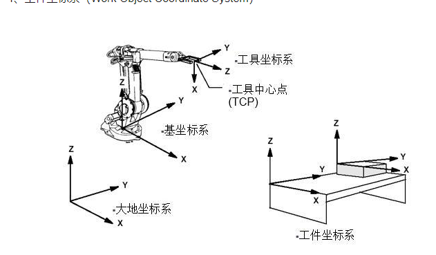
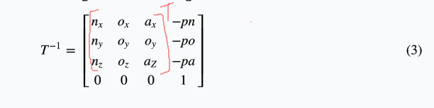
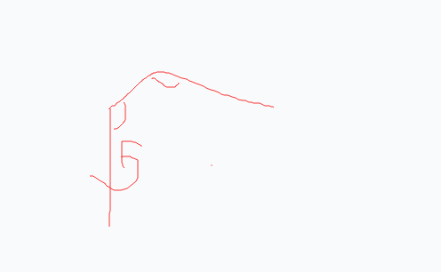
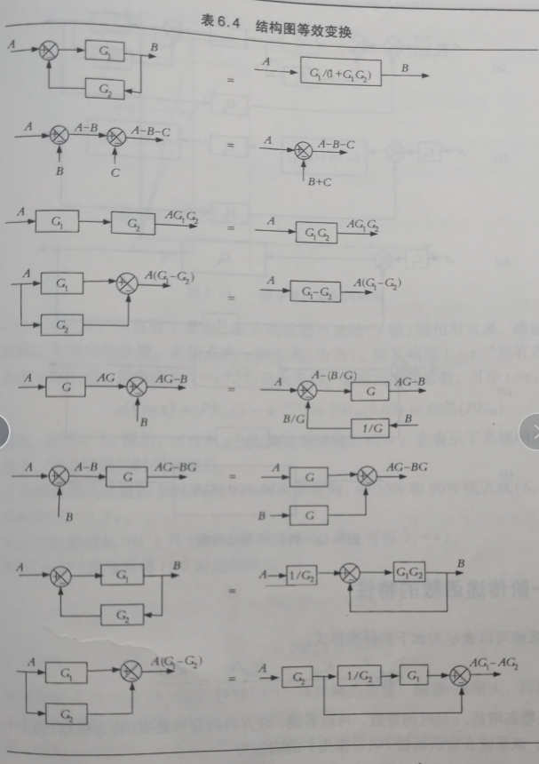
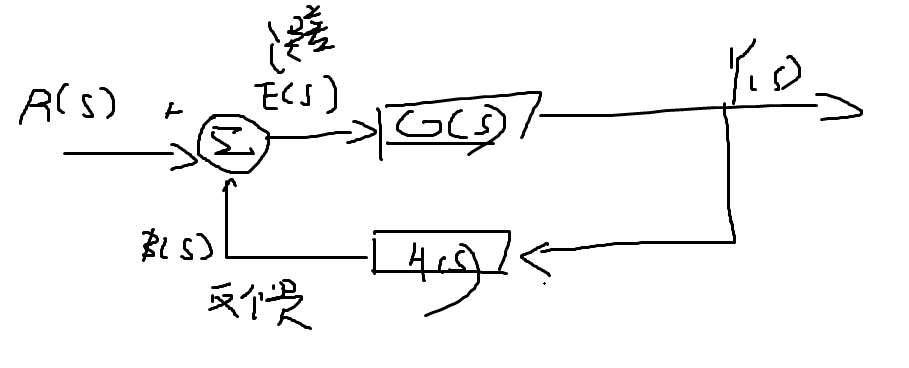
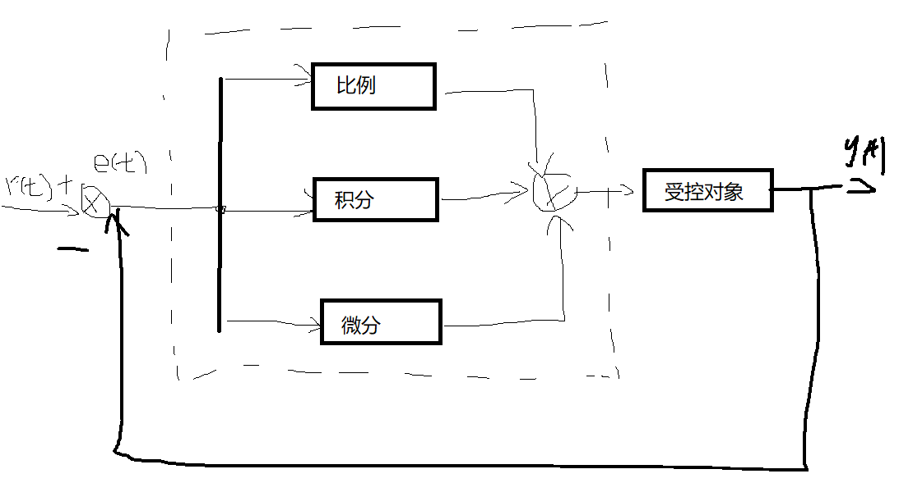
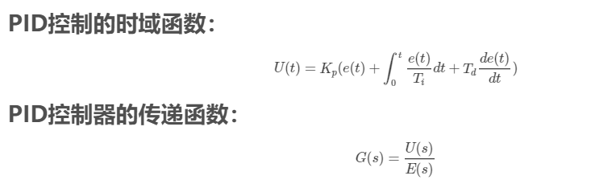
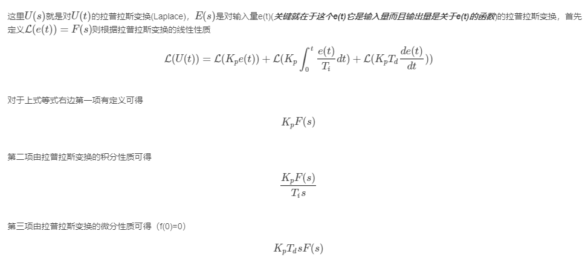
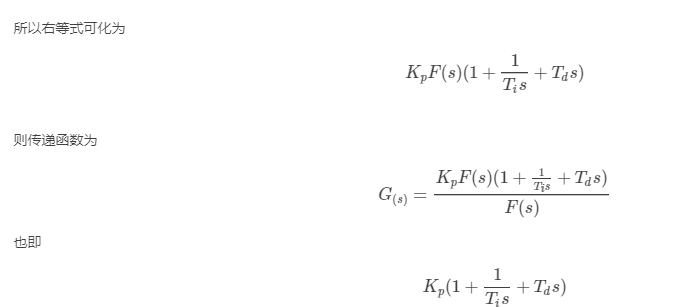
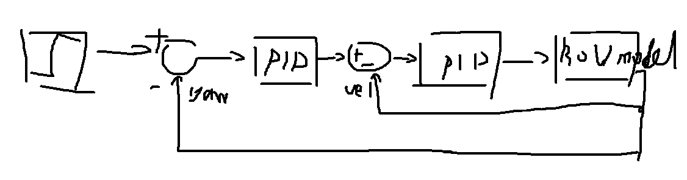

【Robotics】机器人学导论
基础知识
基本部件：机械手、末端执行器、驱动器（肌肉）、传感器、控制器、处理器、软件
自由度
一般有6个自由度。3个用来确定 空间中的位置，3个用来确定姿态
坐标系

1、基坐标系（Base Coordinate System）
2、大地坐标系（World Coordinate System）
3、工具坐标系（Tool Coordinate System）
4、工件坐标系（Work Object Coordinate System）
位置运动学
1.n、o、a坐标轴
n=normal (垂直后面两种轴), 【o=orientstion(图中y轴), a=approach(用来接近物体，z轴)】
用$F_{n,o,a}$表示
在固定参考坐标系原点表示
坐标系是在原点的，只不过旋转之类的变换过了
在固定坐标系的非原点表示
相对坐标系不在原点。需要加第4个位置向量
前3个为0表示是方向向量，第4个为1表示是位置向量（使用比例因子为1）
空间中的一个3维物体也可以用上面的矩阵表示
条件限制：3个向量n o a相互垂直，也就是点积为0
每个旋转向量是单位向量
变换的表示
平移矩阵
左乘
旋转矩阵
绕X轴旋转。
左乘
绕y轴旋转。
左乘
绕z轴旋转。
左乘
相对运动坐标系的变换
相对当前坐标系的变换
需要把变换矩阵右乘后，这一堆矩阵左乘要变换的坐标
矩阵逆的快速运算
1.旋转矩阵
2.平移矩阵

正逆运动学
正运动学:已知所有关节变量，通过正运动学方程计算机器人某时刻的位姿
逆运动学:知道一个位姿，确定所有关节变量
正逆运动学方程
- 1.直角坐标
所有驱动机构都是线性的
就是利用平移矩阵T - 2.圆柱坐标
1个旋转 2个线性运动
分为3步：
沿x轴移动r,绕z轴旋转$\alpha$,沿z轴走l. - 3.球坐标
2个旋转，1个线性运动
先平移r,再绕y轴转$\beta$,再绕z轴转$\gamma$ - 4.链式坐标
由3个旋转组成
公式后面推导
RPY变换
- 绕a轴(x)旋转 ->滚动
- 绕o轴(y)旋转->俯仰
- 绕n轴(z)旋转->偏航
x走指向正面，于是
绕x轴转就是横滚(Roll)
绕y轴就是俯仰(Pitch)
绕z轴就是偏航(Yaw)
于是 变换可以看做
欧拉变换
求姿态矩阵同样，左乘一个逆，解方程
用于直角坐标:$^RT_H=T(p_x,p_y,p_z)RPY(\phi_a,\phi_o,\phi_n)$
用于求坐标:$^RT_H=T(r,\beta,\gamma)Euler(\phi,\theta,\psi)$
正运动学D-H表示
首先为关节建x和z轴（不用y）
建模步骤：
1.所有关节用z轴表示，是旋转的话是右手规则的旋转方向，滑动的话是直线运动方向
2.编号n-1,n,n+1….
3.找z轴公垂线，连起来
4.考虑变换
4.1 让x姿势一致：绕$z_n$旋转$\theta_{n+1}$
4.2 让z重叠: 沿$z_n$平移$d_{n+1}$
4.3 让x重叠: 沿x轴移动$a_{n+1}$
4.4 让z对准: 绕$x_{n+1}$旋转$\alpha_{n+1}$
有多少个关节就有多少个A乘起来
为了简化计算
画参数表
| # | $\theta$ | d | a | $\alpha$ |
|---|---|---|---|---|
| 0-1 | ||||
| 1-2 | ||||
| 2-3 |
逆运动学解
一般解：
左乘一个逆。 解方程
微分运动和速度
也就是
两边/dt就是速度微分关系(运动微分方程->速度微分方程)
微分平移
一样，位姿矩阵B左乘个平移矩阵就行
微分旋转
利用以下等式替代
然后也是左乘旋转矩阵
在微分旋转中，由于微分量很小，可以认为相乘的顺序不重要
绕轴q的微分旋转
可看作是绕3个轴的微分旋转而成
于是
结果中可以忽略高阶微分（也就是多个微分量相乘的项）
坐标系的微分
$\Delta$也叫微分算子
坐标系间的微分变化
$^T\Delta$是相对于当前坐标系的微分算子，$Delta$是相对于固定参考坐标系的
有$$
T= \left[
\begin{matrix}
n_x& o_x& a_x& p_x\\
n_y & o_y & o_y & p_y\\
n_z & o_z & a_Z & p_z\\
0 & 0 & 0 & 1
\end{matrix}
\right] \tag{3}
\Delta= \left[
\begin{matrix}
0& -\delta z& \delta y& dx\\
\delta z & 0 & -\delta x & dy\\
-\delta y & \delta x & 0 & dz\\
0 & 0 & 0 & 0
\end{matrix}
\right] \tag{3}
动力学分析和力
拉格朗日力学
轨迹规划
前面研究如何从关节变量推断出机器人的位置（运动学），或者已知位姿推断出关节变量（逆运动学）
一次多项式规划
相当于匀速前进，速度为常数，加速度为0
三次多项式规划
条件:$\theta(t_i)=\theta_i,\theta(t_f)=\theta_f,\dot{\theta}(t_i)=0,\dot{\theta}(t_f)=0$
求导，代入条件即可
三次多项式能规划 起始时间和速度 但是不能规划加速度
五次多项式规划
加上了及速度
求导2次来解
抛物线过渡性线段
过渡时间$t_b=\frac{\theta_i-\theta_f+\omega t_f}{\omega}$
拉普拉斯变换、反变换
将时域转为拉普拉斯域
结构图化简：

控制论

控制算法有
PID，模糊控制，神经网络控制，遗传算法……

e(t)是偏差信号 , r(t)为设定值，y(t)为被调量测量值.输入为偏差信号e(t)=r(t)-y(t)
输出为偏差信号的比例、积分、微分的线性组合
传递函数是指零初始条件下线性系统响应（即输出）量的拉普拉斯变换（或z变换）与激励（即输入）量的拉普拉斯变换之比。记作G（s）=Y（s）/U（s），其中Y（s）、U（s)分别为输出量和输入量的拉普拉斯变换。
传递函数$G(s)=K_p+\frac{K_I}{s}+K_Ds$
推导:



比例控制器
$u(t)=K_pe(t)+u_0$
K_p为比例系数 u_0为控制量初值
比例控制器对于偏差是及时反应的，存在跃阶
比例积分
为了消除比例控制存在的静差
$u(t)=K_p[e(t)+\frac{1}{T_I\int_0^te(t)dt}]+u_0$
偏差存在积分就会起作用知道偏差为0
降低了系统速度
PID
加入微分。对偏差的任何变化都会起作用，以调整系统的输出。可以克服震荡，减少超调量。
串级PID
先计算主回路(PID1),然后副回路(PID2,响应速度快)

内回路为速度反馈。外回路为角度反馈